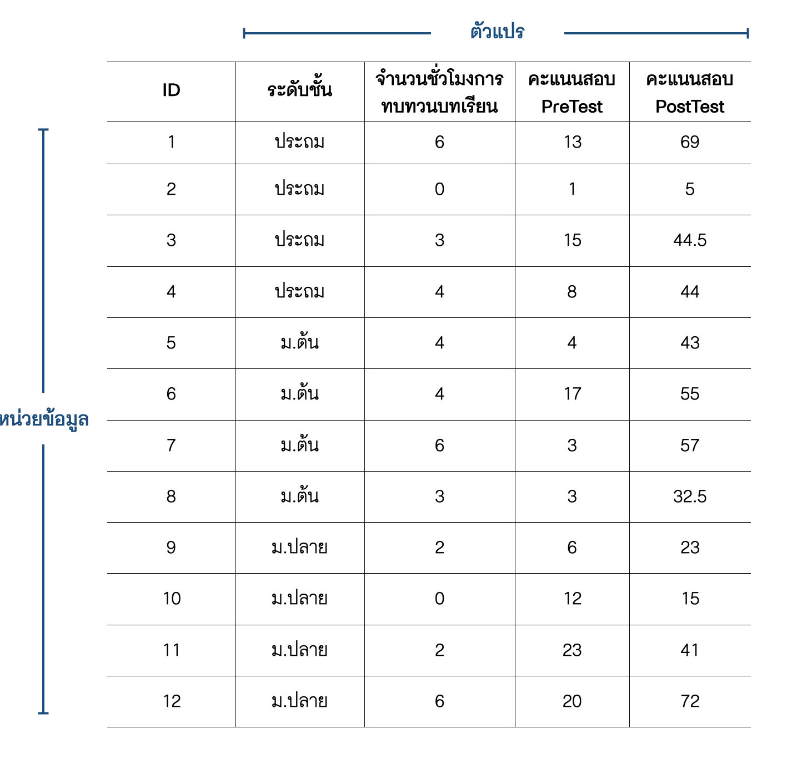

| นักเรียน | คะแนนวิชาคณิตศาสตร์ | คะแนนวิชาวิทยาศาสตร์ |
|---|---|---|
| บุญมา | 10 | 2 |
| บุญมี | NA | 20 |
| บุญเติม | 15 | 20 |
| บุญหนัก | 4 | 5 |
ตอนที่ 4.2 การจัดระเบียบข้อมูล (tidying data)
ชุดข้อมูล (data set) มีลักษณะเป็นตารางที่ประกอบด้วยมิติด้านคอลัมน์ (column) และแถว (row) ใช้เก็บข้อมูลของตัวแปรต่าง ๆ ข้อมูลที่ถูกจัดเก็บอยู่ในตารางดังกล่าวเป็นไปได้ทั้งข้อมูลเชิงปริมาณที่มีค่าเป็นตัวเลข ข้อมูลเชิงคุณลักษณะที่ไม่ใช่ตัวเลข การออกแบบตารางสำหรับจัดเก็บข้อมูลนั้นสามารถทำได้หลากหลายลักษณะ พิจารณาชุดข้อมูลในตาราง 1 และ 2 ด้านล่างจะเห็นว่าถึงแม้จะเป็นเป็นชุดข้อมูลที่จัดเก็บข้อมูลเดียวกัน แต่ก็สามารถที่จะมีรูปแบบการจัดเก็บที่แตกต่างกันได้
ตาราง 4.1 : คะแนนสอบวิชาคณิตศาสตร์และภาษาอังกฤษของนักเรียน (รูปแบบที่ 1)
ตาราง 4.2 : คะแนนสอบวิชาคณิตศาสตร์และภาษาอังกฤษของนักเรียน (รูปแบบที่ 2)
| นักเรียน | รายวิชา | คะแนน |
|---|---|---|
| บุญมา | คณิตศาสตร์ | 10 |
| บุญมา | ภาษาอังกฤษ | 2 |
| บุญมี | คณิตศาสตร์ | NA |
| บุญมี | ภาษาอังกฤษ | 20 |
| บุญเติม | คณิตศาสตร์ | 15 |
| บุญเติม | ภาษาอังกฤษ | 20 |
| บุญหนัก | คณิตศาสตร์ | 4 |
| บุญหนัก | ภาษาอังกฤษ | 5 |
อย่างไรก็ตามการจัดเก็บข้อมูลในชุดข้อมูลในรูปแบบที่เหมาะสมกับการดำเนินการวิเคราะห์ข้อมูล หรือการสร้างทัศนภาพข้อมูลจะช่วยให้การวิเคราะห์ข้อมูลตามวัตถุประสงค์ต่าง ๆ สามารถทำได้ง่ายและมีประสิทธิภาพ ในทางกลับกันการจัดเก็บข้อมูลในรูปแบบที่ไม่เหมาะสมจะเป็นอุปสรรคในการวิเคราะห์ข้อมูล นอกจากนี้ยังอาจเป็นปัจจัยที่ก่อให้เกิดความผิดพลาดในผลการวิเคราะห์อีกด้วย รูปแบบของชุดข้อมูลที่เหมาะสมและสนับสนุนให้การวิเคราะห์ข้อมูลสามารถดำเนินไปได้อย่างมีประสิทธิภาพเรียกว่า ชุดข้อมูลจัดระเบียบ (tidy data)
ชุดข้อมูลจัดระเบียบเป็นตารางข้อมูลที่มีลักษณะสำคัญของรูปแบบการจัดเก็บข้อมูล 3 ประการ (สิวะโชติ ศรีสุทธิยากร, 2564; Wickham, 2014) ดังนี้
- มิติด้านคอลัมน์ (column) ของชุดข้อมูล เป็นมิติของตัวแปร โดยที่แต่ละคอลมน์จะใช้เก็บข้อมูลตัวแปรได้เพียงคอลัมน์ละหนึ่งตัวแปรเท่านั้น
- มิติด้านแถว (row) ของชุดข้อมูล เป็นมิติของหน่วยข้อมูล โดยที่แต่ละแถวจะใช้เก็บข้อมูลของหน่วยข้อมูลได้เพียงแถวละหนึ่งหน่วยข้อมูลเท่านั้น
- ภายในแต่ละเซลล์ (cell) ของชุดข้อมูล จะใช้เก็บข้อมูลค่าสังเกตได้เพียงค่าเดียวเท่านั้น
รูป 4.1 แสดงตัวอย่างของชุดข้อมูลจัดระเบียบที่มีคุณลักษณะข้างต้น สังเกตว่าหัวตาราง (แถวแรกของตาราง) จะเป็นส่วนที่ใช้ระบุชื่อของตัวแปรในแต่ละคอลัมน์ อย่างไรก็ตามในสถานการณ์จริงชุดข้อมูลส่วนใหญ่มักมีลักษณะที่ละเมิดเงื่อนไขของชุดข้อมูลจัดระเบียบข้างต้นอย่างน้อยหนึ่งข้อ การจัดระเบียบชุดข้อมูลจึงเป็นขั้นตอนที่มีความสำคัญภายใต้การดำเนินงานทางด้านวิทยาการข้อมูล เนื้อหาในตอนที่ 4.1 นี้จึงจะกล่าวถึง การสำรวจลักษณะของชุดข้อมูล เพื่อวิเคราะห์สภาพและระบุปัญหาความไม่เป็นระเบียบของชุดข้อมูล (ถ้ามี) จากนั้นจะกล่าวถึงวิธีการที่เกี่ยวข้องสำหรับแก้ปัญหาดังกล่าว รายละเอียดมีดังนี้

ที่มา : ดัดแปลงจาก สิวะโชติ ศรีสุทธิยากร (2564)
เรื่องที่ 4.2.1 การสำรวจลักษณะของชุดข้อมูล
ในหัวข้อนี้จะใช้ชุดข้อมูล gapminder (Bryan, 2017) ที่ประกอบด้วยข้อมูลเกี่ยวกับจำนวนประชากร (pop) ผลิตภัณฑ์มวลรวมในประเทศต่อหัว (gdpPercap) และอายุขัยเฉลี่ยของประชากร (lifeExp) ของประเทศต่าง ๆ เป็นตัวอย่างประกอบการอธิบาย เมื่อผู้วิเคราะห์นำข้อมูล gapminder เข้าสู่โปรแกรมแล้วเรียกดูชุดข้อมูลจะได้ผลลัพธ์ที่มีลักษณะดังนี้
country continent year lifeExp pop gdpPercap
1 Afghanistan Asia 1952 28.801 8425333 779.4453
2 Afghanistan Asia 1957 30.332 9240934 820.8530
3 Afghanistan Asia 1962 31.997 10267083 853.1007
4 Afghanistan Asia 1967 34.020 11537966 836.1971
5 Afghanistan Asia 1972 36.088 13079460 739.9811
6 Afghanistan Asia 1977 38.438 14880372 786.1134
7 Afghanistan Asia 1982 39.854 12881816 978.0114
8 Afghanistan Asia 1987 40.822 13867957 852.3959
9 Afghanistan Asia 1992 41.674 16317921 649.3414
10 Afghanistan Asia 1997 41.763 22227415 635.3414 country continent year lifeExp pop gdpPercap
1695 Zimbabwe Africa 1962 52.358 4277736 527.2722
1696 Zimbabwe Africa 1967 53.995 4995432 569.7951
1697 Zimbabwe Africa 1972 55.635 5861135 799.3622
1698 Zimbabwe Africa 1977 57.674 6642107 685.5877
1699 Zimbabwe Africa 1982 60.363 7636524 788.8550
1700 Zimbabwe Africa 1987 62.351 9216418 706.1573
1701 Zimbabwe Africa 1992 60.377 10704340 693.4208
1702 Zimbabwe Africa 1997 46.809 11404948 792.4500
1703 Zimbabwe Africa 2002 39.989 11926563 672.0386
1704 Zimbabwe Africa 2007 43.487 12311143 469.7093ผลลัพธ์ข้างต้นจะเห็นว่าชุดข้อมูล gapminder ประกอบด้วยตัวแปรทั้งหมด 6 ตัว ได้แก่ ประเทศ (country) ทวีป (continent) ปี (year) อายุขัยเฉลี่ยของประชากร (lifeExp) จำนวนประชากร (pop) และผลิตภัณฑ์มวลรวมต่อหัวภายในประเทศ (gdpPercap) ผู้อ่านจะสังเกตเห็นว่าการเรียนดูข้อมูลทั้งชุดขึ้นมาโดยตรงดังตัวอย่างข้างต้นเป็นวิธีการที่ไม่มีประสิทธิภาพในการสำรวจข้อมูล ทั้งนี้เป็นเพราะในสถานการณ์ที่ข้อมูลมีจำนวนมาก วิธีการดังกล่าวจะให้รายละเอียดของชุดข้อมูลที่มากเกินไปโดยไม่จำเป็น นอกจากนี้ยังมีโอกาสสูงที่จะเกิดปัญหาข้อมูลล้นหน้าจอแสดงผล จนผู้วิเคราะห์ไม่สามารถทราบสภาพของชุดข้อมูลดังกล่าวได้อย่างสะดวก
ในทางปฏิบัติการสำรวจชุดข้อมูลต่าง ๆ ผู้วิเคราะห์จะไม่ได้เรียกดูหรือสำรวจชุดข้อมูลทั้งหมดโดยตรง แต่จะใช้ module ของโปรแกรมวิเคราะห์ข้อมูลช่วยในการสำรวจ module ดังกล่าวจะทำหน้าที่สรุปสารสนเทศที่จำเป็นสำหรับการทำความเข้าใจสภาพของชุดข้อมูลดังกล่าว ได้แก่ การเรียกดูรายการและสถานะของตัวแปรในชุดข้อมูล และการเรียกดูส่วนหัวและส่วนท้ายของชุดข้อมูล รายละเอียดมีดังนี้
การเรียกดูรายการและสถานะของตัวแปร
วิธีการเรียกดูผลลัพธ์ส่วนนี้จะแตกต่างกันไปขึ้นอยู่กับผู้วิเคราะห์ว่าใช้โปรแกรมใด เช่น ในกรณีที่ใช้ภาษา R อาจเลือกใช้ฟังก์ชัน str() หรือ glimpse() หรือในกรณีที่ใช้ภาษา Python อาจเลือก method info() ภายใต้ pandas library เป็นต้น ผลการวิเคราะห์ด้านล่างแสดงผลลัพธ์ในภาษา R และ Python ดังกล่าว
# R syntax
library(dplyr)
glimpse(gapminder)Rows: 1,704
Columns: 6
$ country <fct> "Afghanistan", "Afghanistan", "Afghanistan", "Afghanistan", …
$ continent <fct> Asia, Asia, Asia, Asia, Asia, Asia, Asia, Asia, Asia, Asia, …
$ year <int> 1952, 1957, 1962, 1967, 1972, 1977, 1982, 1987, 1992, 1997, …
$ lifeExp <dbl> 28.801, 30.332, 31.997, 34.020, 36.088, 38.438, 39.854, 40.8…
$ pop <int> 8425333, 9240934, 10267083, 11537966, 13079460, 14880372, 12…
$ gdpPercap <dbl> 779.4453, 820.8530, 853.1007, 836.1971, 739.9811, 786.1134, …# Python syntax
import pandas
gapminder.info()<class 'pandas.core.frame.DataFrame'>
RangeIndex: 1704 entries, 0 to 1703
Data columns (total 6 columns):
# Column Non-Null Count Dtype
--- ------ -------------- -----
0 country 1704 non-null category
1 continent 1704 non-null category
2 year 1704 non-null int32
3 lifeExp 1704 non-null float64
4 pop 1704 non-null int32
5 gdpPercap 1704 non-null float64
dtypes: category(2), float64(2), int32(2)
memory usage: 51.4 KBเมื่อพิจารณาผลลัพธ์จากภาษา R ข้างต้นแสดงให้เห็นว่าในชุดข้อมูล gapminder ประกอบด้วยข้อมูลจำนวน 1,704 หน่วย และมีจำนวน 6 คอลัมน์ โดยมีการรายงานชื่อของตัวแปรในแต่ละคอลัมน์ พร้อมทั้งระบุสถานะของตัวแปรดังกล่าว เช่น ตัวแปร country มีสถานะเป็นตัวแปรประเภทปัจจัย (fct) หรือตัวแปร year มีสถานะเป็นตัวแปรตัวเลขจำนวนเต็ม (int) หรือตัวแปร gdrPercap มีสถานะเป็นตัวแปรประเภทจำนวนจริง (dbl) เป็นต้น ผลลัพธ์นี้ช่วยให้ผู้วิเคราะห์ทราบว่าการนำเข้าข้อมูลดังกล่าว นำเข้ามาอย่างถูกต้องหรือไม่ หากมีตัวแปรใดที่ถูกจัดเก็บอยู่ในสถานะที่ไม่เหมาะสม ผู้วิเคราะห์ก็สามารถดำเนินการแก้ไขปรับเปลี่ยนให้เหมาะสมได้ และเมื่อพิจารณาผลลัพธ์จากภาษา Python พบว่าให้สารสนเทศในลักษณะเดียวกับภาษา R
การเรียกดูส่วนหัวและส่วนท้ายของชุดข้อมูล
วิธีการนี้เป็นวิธีการง่าย ๆ ที่ช่วยให้ผู้วิเคราะห์ทำความเข้าใจโครงสร้างของตารางข้อมูล ขอบเขตของตัวแปร รวมทั้งลักษณะของค่าสังเกตบางส่วนที่จัดเก็บอยู่ในชุดข้อมูล การดำเนินการส่วนนี้ด้วยภาษา R สามารถทำได้โดยใช้ฟังก์ชัน head() และ tail() ดังนี้
# R syntax
head(gapminder)# A tibble: 6 × 6
country continent year lifeExp pop gdpPercap
<fct> <fct> <int> <dbl> <int> <dbl>
1 Afghanistan Asia 1952 28.8 8425333 779.
2 Afghanistan Asia 1957 30.3 9240934 821.
3 Afghanistan Asia 1962 32.0 10267083 853.
4 Afghanistan Asia 1967 34.0 11537966 836.
5 Afghanistan Asia 1972 36.1 13079460 740.
6 Afghanistan Asia 1977 38.4 14880372 786.# R syntax
tail(gapminder)# A tibble: 6 × 6
country continent year lifeExp pop gdpPercap
<fct> <fct> <int> <dbl> <int> <dbl>
1 Zimbabwe Africa 1982 60.4 7636524 789.
2 Zimbabwe Africa 1987 62.4 9216418 706.
3 Zimbabwe Africa 1992 60.4 10704340 693.
4 Zimbabwe Africa 1997 46.8 11404948 792.
5 Zimbabwe Africa 2002 40.0 11926563 672.
6 Zimbabwe Africa 2007 43.5 12311143 470.ส่วนภาษา Python สามารถทำได้โดยใช้ method head() และ tail() ของ pandas libary ดังนี้
# Python syntax
gapminder.head() country continent year lifeExp pop gdpPercap
0 Afghanistan Asia 1952 28.801 8425333 779.445314
1 Afghanistan Asia 1957 30.332 9240934 820.853030
2 Afghanistan Asia 1962 31.997 10267083 853.100710
3 Afghanistan Asia 1967 34.020 11537966 836.197138
4 Afghanistan Asia 1972 36.088 13079460 739.981106# Python syntax
gapminder.tail() country continent year lifeExp pop gdpPercap
1699 Zimbabwe Africa 1987 62.351 9216418 706.157306
1700 Zimbabwe Africa 1992 60.377 10704340 693.420786
1701 Zimbabwe Africa 1997 46.809 11404948 792.449960
1702 Zimbabwe Africa 2002 39.989 11926563 672.038623
1703 Zimbabwe Africa 2007 43.487 12311143 469.709298ในทางปฏิบัติผลการวิเคราะห์ด้วยวิธีการข้างต้นเพียงพอสำหรับผู้วิเคราะห์ที่จะใช้พิจารณาว่าโครงสร้างการจัดเก็บข้อมูลในชุดข้อมูลที่นำเข้ามามีลักษณะเป็นชุดข้อมูลจัดระเบียบที่เหมาะสำหรับการนำไปวิเคราะห์ข้อมูลตามวัตถุประสงค์แล้วหรือไม่ หากยังไม่เหมาะสมผู้วิเคราะห์จำเป็นต้องแก้ปัญหาในเชิงของโครงสร้างชุดข้อมูลดังกล่าวก่อนที่จะดำเนินการในขั้นตอนต่อไป หัวข้อถัดไปจะกล่าวถึงเครื่องมือหรือวิธีการพื้นฐานที่จำเป็นสำหรับปรับเปลี่ยนลักษณะของชุดข้อมูลให้ตรงกับความต้องการ
เรื่องที่ 4.2.2 การปรับเปลี่ยนลักษณะของชุดข้อมูล (reshaping data)
ชุดข้อมูลที่ยังไม่เป็นระเบียบมีหลากหลายลักษณะ และโดยมากมักพบเมื่อผู้วิเคราะห์ได้ข้อมูลมาจากแหล่งข้อมูลทุติยภูมิ เช่น ฐานข้อมูล หรือแหล่ง open data ต่าง ๆ หัวข้อนี้จะกล่าวถึงปัญหาข้อมูลไม่เป็นระเบียบที่มักพบและวิธีการแก้ปัญหาดังกล่าว รายละเอียดมีดังนี้
การปรับเปลี่ยนรูปแบบชุดข้อมูลระหว่างชุดข้อมูลแบบกว้างกับชุดข้อมูลแบบยาว
ชุดข้อมูลอาจจำแนกได้เป็น 2 ลักษณะ ได้แก่ ชุดข้อมูลแบบกว้าง (wide format) และชุดข้อมูลแบบยาว (long format) รายละเอียดมีดังนี้
- ชุดข้อมูลแบบกว้าง เป็นชุดข้อมูลที่มีการกระจายค่าสังเกตของตัวแปรสำคัญขึ้นไปอยู่บนคอลัมน์ ดังตัวอย่างชุดข้อมูล
onet.xlsxในตาราง 3 โดยส่วนใหญ่ตารางลักษณะนี้เหมาะสำหรับการนำเสนอข้อมูล หรือนำไปใช้สำหรับสร้างทัศนภาพข้อมูลในบางกรณี แต่มักไม่เหมาะที่จะนำไปเข้าสู่โมเดลวิเคราะห์ข้อมูลต่าง ๆ - ชุดข้อมูลแบบยาว เป็นชุดข้อมูลที่มีลักษณะเป็นไปตามเงื่อนไขของชุดข้อมูลจัดระเบียบ โดยมิติด้านคอลัมน์ใช้เก็บข้อมูลของตัวแปรแต่ละตัว ส่วนมิติด้านแถวใช้เก็บข้อมูลของหน่วยข้อมูล ชุดข้อมูล
gapminderข้างต้นเป็นตัวอย่างของชุดข้อมูลแบบยาว ชุดข้อมูลแบบยาวเป็นรูปแบบปกติที่มักพบในฐานข้อมูลแบบ SQL ทั่วไป
ตาราง 4.3 : (ตัวอย่างชุดข้อมูลแบบกว้าง) จำนวนนักเรียนจำแนกตามรายวิชาและช่วงคะแนนผลการสอบ O-NET ระดับชั้น ม.6 ปีการศึกษา 2560
ช่วงคะแนนผลสอบ O-NET |
||||||||||
|---|---|---|---|---|---|---|---|---|---|---|
| วิชา | < 10 คะแนน | 10-20 | 20-30 | 30-40 | 40-50 | 50-60 | 60-70 | 70-80 | 80-90 | 90-100 |
| ภาษาไทย | 205 | 10918 | 39277 | 59459 | 80767 | 84977 | 61052 | 28544 | 6623 | 221 |
| สังคมศึกษา | 93 | 11450 | 119492 | 155338 | 64380 | 17638 | 3721 | 447 | 8 | 0 |
| ภาษาอังกฤษ | 2664 | 120768 | 146339 | 48926 | 21706 | 12859 | 8510 | 5868 | 3791 | 1156 |
| คณิตศาสตร์ | 52250 | 163221 | 81737 | 29113 | 14854 | 9772 | 7302 | 5524 | 4516 | 4564 |
| วิทยาศาสตร์ | 950 | 61511 | 183241 | 75152 | 25353 | 12909 | 7437 | 3944 | 1578 | 157 |
ในทางปฏิบัติผู้วิเคราะห์มีโอกาสพบชุดข้อมูลทั้งสองลักษณะ การปรับเปลี่ยนรูปแบบของชุดข้อมูลดังกล่าว จากชุดข้อมูลแบบกว้างให้เป็นแบบยาว และจากให้อยู่ในรูปแบบยาวให้เป็นรูปแบบกว้าง จึงเป็นทักษะพื้นฐานที่จำเป็นสำหรับนักวิทยาการข้อมูล ในทำนองเดียวกับการสำรวจโครงสร้างชุดข้อมูล วิธีการปรับเปลี่ยนรูปแบบตารางข้อมูลมีความแตกต่างกันขึ้นอยู่กับโปรแกรมวิเคราะห์ข้อมูลที่เลือกใช้
ในกรณีที่ใช้ภาษา R ผู้วิเคราะห์สามารถดำเนินการได้หลายแบบ วิธีการหนึ่งที่สามารถทำได้สะดวกคือการใช้เครื่องมือใน package-tidyr พิจารณาชุดข้อมูล จำนวนผู้สำเร็จการศึกษา.xlsx ที่จัดเก็บอยู่ในชุดข้อมูล wide_data ด้านล่าง จะเห็นว่าเป็นชุดข้อมูลรูปแบบกว้างที่แสดงจำนวนผู้สำเร็จการศึกษาในระดับ ปวช. และ ปวส. จำแนกตามสาขาวิชา
# A tibble: 9 × 4
`สาขาวิชา` รวม ปวช. ปวส.
<chr> <dbl> <dbl> <dbl>
1 อุตสาหกรรม 123268 65724 57544
2 พาณิชยกรรม /บริหารธุรกิจ 106556 55257 51299
3 อุตสาหกรรมการท่องเที่ยว 10779 6696 4083
4 คหกรรม 7171 4101 3070
5 เกษตรกรรม 6026 2926 3100
6 ศิลปกรรม 5175 4163 1012
7 เทคโนโลยีสารสนเทศฯ 3702 1758 1944
8 ประมง 576 91 485
9 อุตสาหกรรมสิ่งทอ 87 39 48หากผู้วิเคราะห์ต้องการปรับรูปแบบของชุดข้อมูล wide_data ข้างต้นให้เป็นชุดข้อมูลแบบยาว สามารถทำได้โดยใช้ฟังก์ชัน pivot_longer() โดยกำหนดอารกิวเมนท์ data เพื่อระบุชุดข้อมูลที่ต้องการปรับให้เป็นรูปแบบยาว cols เพื่อกำหนดคอลัมน์ในชุดข้อมูลแบบกว้างที่จะยุบรวมไว้ภายในคอลัมน์เดียวกัน names_to ใช้กำหนดชื่อคอลัมน์ใหม่สำหรับบรรจุคอลัมน์ที่ยุบรวมมาจากชุดข้อมูลแบบกว้างเดิม และ values_to ใช้กำหนดชื่อคอลัมน์สำหรับจัดเก็บค่าสังเกตที่อยู่ภายใต้คอลัมน์ที่ยุบรวมมา ตัวอย่างด้านล่างแสดงการปรับรูปแบบของชุดข้อมูล จำนวนผู้สำเร็จการศึกษา.xlsx ที่จัดเก็บอยู่ในชุดข้อมูล wide_data ให้เป็นชุดข้อมูลแบบยาว
# R syntax
long_data<-pivot_longer(data=wide_data,
cols=2:4,
names_to = "category",
values_to = "number")
long_data%>%data.frame() สาขาว.ชา category number
1 อุตสาหกรรม รวม 123268
2 อุตสาหกรรม ปวช. 65724
3 อุตสาหกรรม ปวส. 57544
4 พาณิชยกรรม /บริหารธุรกิจ รวม 106556
5 พาณิชยกรรม /บริหารธุรกิจ ปวช. 55257
6 พาณิชยกรรม /บริหารธุรกิจ ปวส. 51299
7 อุตสาหกรรมการท่องเที่ยว รวม 10779
8 อุตสาหกรรมการท่องเที่ยว ปวช. 6696
9 อุตสาหกรรมการท่องเที่ยว ปวส. 4083
10 คหกรรม รวม 7171
11 คหกรรม ปวช. 4101
12 คหกรรม ปวส. 3070
13 เกษตรกรรม รวม 6026
14 เกษตรกรรม ปวช. 2926
15 เกษตรกรรม ปวส. 3100
16 ศิลปกรรม รวม 5175
17 ศิลปกรรม ปวช. 4163
18 ศิลปกรรม ปวส. 1012
19 เทคโนโลยีสารสนเทศฯ รวม 3702
20 เทคโนโลยีสารสนเทศฯ ปวช. 1758
21 เทคโนโลยีสารสนเทศฯ ปวส. 1944
22 ประมง รวม 576
23 ประมง ปวช. 91
24 ประมง ปวส. 485
25 อุตสาหกรรมสิ่งทอ รวม 87
26 อุตสาหกรรมสิ่งทอ ปวช. 39
27 อุตสาหกรรมสิ่งทอ ปวส. 48ในทางกลับกันหากมีชุดข้อมูลแบบยาว และผู้วิเคราะห์ต้องการปรับเปลี่ยนให้เป็นชุดข้อมูลแบบกว้างสามารถทำได้ด้วยฟังก์ชัน pivot_wider() ฟังก์ชันนี้มีอาร์กิวเมนท์จำเป็นที่จะต้องระบุ 3 ตัวได้แก่ data เพื่อระบุชุดข้อมูลที่ต้องการปรับให้เป็นรูปแบบกว้าง names_from เพื่อระบุว่าจะนำค่าสังเกตจากคอลัมน์ใดขยายไปเป็นหัวคอลัมน์ของตารางใหม่ และ values_from ใช้ระบุว่าจะเอาข้อมูล/ค่าสังเกตจากคอลัมน์ใดไปอยู่ภายใต้คอลัมน์ใหม่ที่ขยายจากการระบุใน names_from ตัวอย่างด้านล่างแสดงการเปลี่ยนชุดข้อมูล long_data ในข้างต้นให้กลับเป็นชุดข้อมูลแบบกว้างเหมือนเดิม
# R syntax
pivot_wider(data = long_data,
names_from = "category",
values_from = "number")# A tibble: 9 × 4
`สาขาวิชา` รวม ปวช. ปวส.
<chr> <dbl> <dbl> <dbl>
1 อุตสาหกรรม 123268 65724 57544
2 พาณิชยกรรม /บริหารธุรกิจ 106556 55257 51299
3 อุตสาหกรรมการท่องเที่ยว 10779 6696 4083
4 คหกรรม 7171 4101 3070
5 เกษตรกรรม 6026 2926 3100
6 ศิลปกรรม 5175 4163 1012
7 เทคโนโลยีสารสนเทศฯ 3702 1758 1944
8 ประมง 576 91 485
9 อุตสาหกรรมสิ่งทอ 87 39 48ถ้าผู้วิเคราะห์ต้องการศึกษารายละเอียดเพิ่มเติมเกี่ยวกับฟังก์ชันต่าง ๆ ของโปรแกรม R สามารถเรียกดูคู่มือของฟังก์ชันดังกล่าวได้โดยใช้คำสั่ง ?XXX หรือ help(XXX) เช่น หากต้องการรายละเอียดของฟังก์ชัน pivot_longer() ให้พิมพ์คำสั่ง ?pivot_longer() หรือ help(pivot_longer() เป็นต้น
ในกรณีที่ใช้ภาษา Python การปรับเปลี่ยนชุดข้อมูลแบบกว้างให้เป็นแบบยาวสามารถทำได้โดยใช้ฟังก์ชัน melt() ภายใต้ pandas library ฟังก์ชัน melt() มีพารามิเตอร์ควบคุมการทำงานของฟังก์ชันที่สำคัญ 3 ตัวได้แก่ frame ใช้ระบุชุดข้อมูล (pandas.DataFrame) ที่ต้องการดำเนินงาน id_vars ใช้ระบุคอลัมน์หรือตัวแปรที่เป็น id ของหน่วยข้อมูล และ value_vars ทำงานเหมือนกับอาร์กิวเมนท์ names_to ของ pivot_longer() ในโปรแกรม R ตัวอย่างด้านล่างแสดงการปรับรูปแบบชุดข้อมูล จำนวนผู้สำเร็จการศึกษา.xlsx ที่เป็นชุดข้อมูลแบบกว้างให้เป็นชุดข้อมูลแบบยาวด้วยฟังก์ชันดังกล่าว โดยในตัวอย่างชุดข้อมูลดังกล่าวจัดเก็บอยู่ในตัวแปรชื่อ wide_data
# Python syntax
import pandas as pd
long_data = pd.melt(frame = wide_data,
id_vars=['สาขาวิชา'],
value_vars=['รวม','ปวช.', 'ปวส.'])
long_data สาขาวิชา variable value
0 อุตสาหกรรม รวม 123268.0
1 พาณิชยกรรม /บริหารธุรกิจ รวม 106556.0
2 อุตสาหกรรมการท่องเที่ยว รวม 10779.0
3 คหกรรม รวม 7171.0
4 เกษตรกรรม รวม 6026.0
5 ศิลปกรรม รวม 5175.0
6 เทคโนโลยีสารสนเทศฯ รวม 3702.0
7 ประมง รวม 576.0
8 อุตสาหกรรมสิ่งทอ รวม 87.0
9 อุตสาหกรรม ปวช. 65724.0
10 พาณิชยกรรม /บริหารธุรกิจ ปวช. 55257.0
11 อุตสาหกรรมการท่องเที่ยว ปวช. 6696.0
12 คหกรรม ปวช. 4101.0
13 เกษตรกรรม ปวช. 2926.0
14 ศิลปกรรม ปวช. 4163.0
15 เทคโนโลยีสารสนเทศฯ ปวช. 1758.0
16 ประมง ปวช. 91.0
17 อุตสาหกรรมสิ่งทอ ปวช. 39.0
18 อุตสาหกรรม ปวส. 57544.0
19 พาณิชยกรรม /บริหารธุรกิจ ปวส. 51299.0
20 อุตสาหกรรมการท่องเที่ยว ปวส. 4083.0
21 คหกรรม ปวส. 3070.0
22 เกษตรกรรม ปวส. 3100.0
23 ศิลปกรรม ปวส. 1012.0
24 เทคโนโลยีสารสนเทศฯ ปวส. 1944.0
25 ประมง ปวส. 485.0
26 อุตสาหกรรมสิ่งทอ ปวส. 48.0ใน Python ผู้อ่านสามารถเรียกดูรายละเอียดของฟังก์ชันที่ต้องการใช้งานโดยพิมพ์คำส่ง ?XXX หรือ help(XXXX) เหมือนกับภาษา R เช่นในกรณีนี้ต้องการรายละเอียดการใช้งานฟังก์ชัน melt()ให้พิมพ์คำสั่ง help(pd.melt)
ในทางกลับกันหากต้องการปรับเปลี่ยนรูปแบบของตารางแบบยาวให้เป็นแบบกว้างสามารถทำได้ด้วยฟังก์ชัน pivot() ดังตัวอย่างต่อไปนี้
pd.pivot(data= long_data,
index=['สาขาวิชา'],
columns=['variable'],
values=['value']) value
variable ปวช. ปวส. รวม
สาขาวิชา
คหกรรม 4101.0 3070.0 7171.0
ประมง 91.0 485.0 576.0
พาณิชยกรรม /บริหารธุรกิจ 55257.0 51299.0 106556.0
ศิลปกรรม 4163.0 1012.0 5175.0
อุตสาหกรรม 65724.0 57544.0 123268.0
อุตสาหกรรมการท่องเที่ยว 6696.0 4083.0 10779.0
อุตสาหกรรมสิ่งทอ 39.0 48.0 87.0
เกษตรกรรม 2926.0 3100.0 6026.0
เทคโนโลยีสารสนเทศฯ 1758.0 1944.0 3702.0อีกวิธีการหนึ่งในการปรับรูปแบบตารางระหว่างตารางรูปแบบกว้างกับยาวด้วยภาษา Python คือการใช้ library datar ที่เป็น API ของ package-dplyr และ tidyr ที่ใช้จัดกระทำและจัดระเบียบชุดข้อมูลใน R กล่าวคือ ผู้วิเคราะห์สามารถใช้ฟังก์ชัน pivot_longer() และ pivot_wider() รวมทั้งฟังก์ชันอื่น ๆ ที่เกี่ยวข้องใน Python ได้เหมือนกับที่ดำเนินการในภาษา R ก่อนการใช้งาน library ผู้วิเคราะห์จำเป็นต้องดาวน์โหลดและติดตั้ง library ลงในเครื่องก่อน โดยภายในหน้าต่าง terminal ให้พิมพ์คำสั่ง pip install -U datar รายละเอียดเพิ่มเติมสามารถศึกษาได้จาก https://github.com/pwwang/datar
การแยกคอลัมน์
ในบางกรณีชุดข้อมูลที่นำใช้ในการวิเคราะห์อาจมีบางคอลัมน์ที่จัดเก็บค่าสังเกตของหลายตัวแปรอยู่ภายในเซลล์เดียวกัน ดังตัวอย่างในตาราง 4 (ดาวน์โหลดได้จาก คะแนนเชาวน์ปัญญาของนักเรียน.xlsx (สิวะโชติ ศรีสุทธิยากร, 2564)) จากตารางจะเห็นว่าคอลัมน์ที่ 3 (gender.age) เป็นคอลัมน์ที่จัดเก็บค่าสังเกตของตัวแปรจำนวน 2 ตัวร่วมกัน ได้แก่ เพศ และ อายุ ของนักเรียน ซึ่งละเมิดเงื่อนไขของชุดข้อมูลจัดระเบียบ การแก้ปัญหาจึงจำเป็นต้องแยกค่าสังเกตในคอลัมน์ดังกล่าวออกจากกันให้เป็น 2 คอลัมน์ได้แก่ คอลัมน์ของเพศ และอายุ ตามลำดับ
ตาราง 4.4 คะแนนเชาว์ปัญญาของนักเรียน
| id | จังหวัด | gender.age | IQ |
|---|---|---|---|
| 1 | กรุงเทพฯ | ชาย/14 | 80 |
| 2 | กรุงเทพฯ | ชาย/24 | 101 |
| 3 | กรุงเทพฯ | ชาย/25 | 105 |
| 4 | กรุงเทพฯ | หญิง/54 | 99 |
| 5 | กรุงเทพฯ | ชาย/18 | 100 |
| 6 | กรุงเทพฯ | หญิง/65 | 105 |
| 7 | เชียงใหม่ | ชาย/14 | 90 |
| 8 | เชียงใหม่ | หญิง/15 | 110 |
| 9 | เชียงใหม่ | ชาย/37 | 103 |
| 10 | เชียงใหม่ | หญิง/28 | 108 |
| 11 | เชียงใหม่ | ชาย/44 | 98 |
| 12 | เชียงใหม่ | หญิง/34 | 106 |
ที่มา: สิวะโชติ ศรีสุทธิยากร (2564)
การแยกคอลัมน์ในชุดข้อมูลดังกล่าวด้วยภาษา R สามารถทำได้หลายวิธีการ ใน package-tidyr มีฟังก์ชัน seperate() ที่สามารถใช้ดำเนินการดังกล่าวได้ ฟังก์ชัน separate() มีอาร์กิวเมนท์สำคัญจำนวน 4 ตัวได้แก่ data ใช้สำหรับระบุชุดข้อมูลที่ต้องการแยกคอลัมน์ col ใช้ระบุคอลัมน์ที่ต้องการแยกค่าสังเกตออกจากกัน into ใช้กำหนดชื่อของคอลัมน์ใหม่ที่ภายหลังจากแยกค่าสังเกตของคอลัมน์เดิมออกจากกัน และ sep ใช้ระบุลลักษณะของตัวคั่น (seperator) ที่ใช้สำหรับแยกข้อมูล การกำหนดตัวคั่นนี้สามารถทำได้ 3 ลักษณะ ได้แก่ การกำหนดด้วยตัวอักษร การกำหนดด้วยตำแหน่งของตัวคั่น และการกำหนดด้วยนิพจน์ปกติ (regular expression) รายละเอียดสามารถศึกษาได้จาก สิวะโชติ ศรีสุทธิยากร (2564)
ตัวอย่างด้านล่างแสดงการใช้ฟังก์ชัน separate() เพื่อแยกค่าสังเกตในคอลัมน์ gender.age ออกเป็นคอลัมน์ gender และ age ตามลำดับ จากตัวอย่างจะเห็นว่าในคอลัมน์ gender.age มีการใช้ตัวคั่นข้อมูลเป็น / จึงกำหนดอาร์กิวเมนท์ sep="/"
# R syntax
iq_sep<-separate(data = iq,
col = "gender.age",
into = c("gender","age"),
sep="/")
iq_sep# A tibble: 12 × 5
id `จังหวัด` gender age IQ
<dbl> <chr> <chr> <chr> <dbl>
1 1 กรุงเทพฯ ชาย 14 80
2 2 กรุงเทพฯ ชาย 24 101
3 3 กรุงเทพฯ ชาย 25 105
4 4 กรุงเทพฯ หญิง 54 99
5 5 กรุงเทพฯ ชาย 18 100
6 6 กรุงเทพฯ หญิง 65 105
7 7 เชียงใหม่ ชาย 14 90
8 8 เชียงใหม่ หญิง 15 110
9 9 เชียงใหม่ ชาย 37 103
10 10 เชียงใหม่ หญิง 28 108
11 11 เชียงใหม่ ชาย 44 98
12 12 เชียงใหม่ หญิง 34 106ในกรณีที่ใช้ภาษา Python สามารถดำเนินการได้โดยใช้ฟังก์ชัน str.split() ภายใต้ pandas library โดยฟังก์ชันดังกล่าวมีพารามิเตอร์ที่สำคัญ 1 ตัวได้แก่ separator ที่ใช้สำหรับระบุลักษณะของตัวคั่นข้อมูลในคอลัมน์ที่ต้องการแยก ตัวอย่างการใช้ฟังก์ชัน str.split() เพื่อแยกคอลัมน์ gender.age ในชุดข้อมูล iq เป็นดังนี้
# Python syntax
iq["gender"] = iq["gender.age"].str.split("/", expand=True)[0]
iq["age"] = iq["gender.age"].str.split("/", expand=True)[1]
iq id จังหวัด gender.age IQ gender age
0 1.0 กรุงเทพฯ ชาย/14 80.0 ชาย 14
1 2.0 กรุงเทพฯ ชาย/24 101.0 ชาย 24
2 3.0 กรุงเทพฯ ชาย/25 105.0 ชาย 25
3 4.0 กรุงเทพฯ หญิง/54 99.0 หญิง 54
4 5.0 กรุงเทพฯ ชาย/18 100.0 ชาย 18
5 6.0 กรุงเทพฯ หญิง/65 105.0 หญิง 65
6 7.0 เชียงใหม่ ชาย/14 90.0 ชาย 14
7 8.0 เชียงใหม่ หญิง/15 110.0 หญิง 15
8 9.0 เชียงใหม่ ชาย/37 103.0 ชาย 37
9 10.0 เชียงใหม่ หญิง/28 108.0 หญิง 28
10 11.0 เชียงใหม่ ชาย/44 98.0 ชาย 44
11 12.0 เชียงใหม่ หญิง/34 106.0 หญิง 34การยุบรวมคอลัมน์
อีกกรณีคือเป็นไปได้ที่ข้อมูลของตัวแปรเดียวกันอาจถูกเก็บอยู่ในหลายคอลัมน์ เช่นข้อมูลคำนำหน้า ชื่อ และนามสกุล หรือ ข้อมูลเวลา (วัน เดือน ปี) ตาราง 5 แสดงข้อมูลจากชุดข้อมูล login.xlsx ที่มีปัญหาดังกล่าว จากตารางจะเห็นว่ามีการจัดเก็บคำนำหน้า และชื่อของผู้เข้าระบบอยู่คนละคอลัมน์กัน
ตาราง 5 จำนวนครั้งของการเข้าระบบ
| คำนำหน้า | ชื่อ | จำนวนครั้งที่เข้าระบบ |
|---|---|---|
| นาย | บุญถึง | 14 |
| นางสาว | บุญเติม | 20 |
| นาย | บุญมาก | 17 |
| นางสาว | บุญมี | 18 |
| นาย | บุญหนัก | 6 |
| นาง | บุญอยู่ | 18 |
| นางสาว | บุญมา | 18 |
| นาย | บุญทับ | 14 |
| นาง | บุญชอบ | 18 |
การยุบรวมคอลัมน์ทั้งสองเข้าด้วยกันในภาษา R สามารถทำได้ด้วยฟังก์ชัน unite() ของ package-tidyr ฟังก์ชันนี้มีอาร์กิวเมนท์ที่สำคัญได้แก่ data ใช้ระบุชุดข้อมูลที่ต้องการดำเนินงาน col ใช้ระบุชื่อของคอลัมน์ใหม่ภายหลังจากยุบรวมคอลัมน์เดิมเข้าด้วยกัน และ sep ใช้สำหรับระบุตัวคั่นสำหรับคั่นข้อมูลที่ยุบรวมกัน (ค่าเริ่มต้นของอาร์กิวเมนท์นี้กำหนดให้ใช้สัญลักษณ์ underscore sep="_")
ตัวอย่างต่อไปนี้แสดงการใช้ฟังก์ชัน unite() ดังกล่าว สมมุติว่า login.xlsx ในข้างต้นถูกจัดเก็บในโปรแกรม R โดยเก็บไว้ในตัวแปร login ผู้วิเคราะห์สามารถยุบรวมคอลัมน์ คำนำหน้า และ ชื่อ เข้าด้วยกัน โดยใช้ฟังก์ชัน unite() ได้ดังนี้
# R syntax
login_united<-unite(login,
col="name",
"คำนำหน้า", "ชื่อ")
login_united# A tibble: 9 × 2
name `จำนวนครั้งที่เข้าระบบ`
<chr> <dbl>
1 นาย_บุญถึง 14
2 นางสาว_บุญเติม 20
3 นาย_บุญมาก 17
4 นางสาว_บุญมี 18
5 นาย_บุญหนัก 6
6 นาง_บุญอยู่ 18
7 นางสาว_บุญมา 18
8 นาย_บุญทับ 14
9 นาง_บุญชอบ 18สำหรับภาษา Python การยุบรวมคอลัมน์ตั้งแต่ 2 คอลัมน์ขึ้นไปเข้าด้วยกันทำได้ง่ายมากโดยการใช้ตัวดำเนินการเชื่อม (concatenate operator) ดังตัวอย่างต่อไปนี้
# Python syntax
login["name"] = login["คำนำหน้า"] + login["ชื่อ"]
login คำนำหน้า ชื่อ จำนวนครั้งที่เข้าระบบ name
0 นาย บุญถึง 14.0 นายบุญถึง
1 นางสาว บุญเติม 20.0 นางสาวบุญเติม
2 นาย บุญมาก 17.0 นายบุญมาก
3 นางสาว บุญมี 18.0 นางสาวบุญมี
4 นาย บุญหนัก 6.0 นายบุญหนัก
5 นาง บุญอยู่ 18.0 นางบุญอยู่
6 นางสาว บุญมา 18.0 นางสาวบุญมา
7 นาย บุญทับ 14.0 นายบุญทับ
8 นาง บุญชอบ 18.0 นางบุญชอบการรวมชุดข้อมูลตามแถว (rows combined)
งานทางด้านสถิติและวิทยาการข้อมูลในปัจจุบันบ่อยครั้งข้อมูลสำคัญมักมาจากหลายแหล่งข้อมูล เช่น อาจได้มาจากการเก็บเกี่ยวข้อมูลจากเว็ปไซด์ส่วนนึง (web scraping) และส่วนที่เหลืออาจเป็นข้อมูลที่ได้จากฐานข้อมูลเปิดต่าง ๆ หากชุดข้อมูลดังกล่าวเป็นข้อมูลของหน่วยการวิเคราะห์เดียวกัน หรือสามารถจัดกระทำให้เป็นข้อมูลของหน่วยการวิเคราะห์เดียวกันได้แล้ว การจะนำข้อมูลดังกล่าวมาวิเคราะห์ร่วมกันจำเป็นที่จะต้องยุบรวมชุดข้อมูลดังกล่าวเข้าด้วยกันก่อน การยุบรวมชุดข้อมูลอาจจำแนกได้เป็น 2 ลักษณะ ได้แก่ การยุบรวมข้อมูลตามแถว (rows combined) และการยุบรวมข้อมูลตามคอลัมน์ (columns combined) หัวข้อนี้จะกล่าวถึงการยุบรวมข้อมูลตามแถว รายละเอียดมีดังนี้
รูป 4.2 แสดงลักษณะของการยุบรวมข้อมูลตามแถว จากรูปจะเห็นว่าเริ่มต้นมีชุดข้อมูลจากแหล่งข้อมูลที่แตกต่างกันจำนวน 3 แหล่ง ได้แก่ A, B และ C โดยที่ชุดข้อมูลจากแต่ละแหล่งดังกล่าวเก็บข้อมูลของตัวแปรเดียวกัน และมีจำนวนคอลัมน์เท่ากัน แต่จะสังเกตเห็นว่าแต่ละชุดข้อมูลมีหน่วยข้อมูลที่แตกต่างกัน การยุบรวมชุดข้อมูลทั้ง 3 ตามแถวจะให้ผลลัพธ์เป็นชุดข้อมูลที่ใหญ่ขึ้นจากเดิม โดยมีหน่วยข้อมูลทั้งหมดจากทั้ง 3 ชุดข้อมูลข้างต้นมาจัดเก็บอยู่ภายใต้ชุดข้อมูลใหม่ขนาด 9 x 3
ที่มา : สิวะโชติ ศรีสุทธิยากร (2564)
การรวมชุดข้อมูลตามแถวด้วยภาษา R สามารถทำได้หลายวิธีการ ฟังก์ชัน bind_rows() ของ package-dplyr สามารถใช้เพื่อรวมชุดข้อมูลดังกล่าวได้ อาร์กิวเมนท์ของฟังก์ชัน bind_rows() ได้แก่ชุดข้อมูลแบบ Dataframe ที่ต้องการนำมารวมกันตามแถว เงื่อนไขของการใช้ฟังก์ชันนี้คือชุดข้อมูลที่จะนำมารวมกันจำเป็นต้องมีจำนวนคอลัมน์เท่ากัน แต่ละคอลัมน์จัดเก็บข้อมูลของตัวแปรเดียวกันและมีการจัดเรียงลำดับของตัวแปรที่เหมือนกัน
ตัวอย่างต่อไปนี้แสดงการยุบรวมข้อมูลตามแถวด้วยฟังก์ชัน bind_rows() สมมุติว่าผู้วิเคราะห์มีไฟล์ข้อมูลของกลุ่มเป้าหมายเดียวกันจำนวน 4 ไฟล์ ที่สามารถดาวน์โหลดไฟล์ดังกล่าวได้จาก https://bit.ly/2AuQgqr (สิวะโชติ ศรีสุทธิยากร, 2564) ไฟล์ข้อมูลทั้ง 4 ประกอบด้วย file1.xlsx, file2.xlsx, file3.xlsx และ file4.xlsx ตามลำดับ โดยที่แต่ละไฟล์จัดเก็บข้อมูลของนักเรียนไฟล์ละ 5 คน ตารางด้านล่างแสดงข้อมูลที่จัดเก็บอยู่ในไฟล์ file1.xlsx
# A tibble: 5 × 5
student.name Lecture.pre PBL.pre Lecture.post PBL.post
<chr> <dbl> <dbl> <dbl> <dbl>
1 บุญมี 20 NA 45 NA
2 บุญมาก 16 NA 34 NA
3 บุญเกิน NA 18 NA 67
4 บุญถึง NA 25 NA 93
5 บุญธรรม 13 NA 50 NAเมื่อผู้อ่านได้ดำเนินการสำรวจไฟล์ข้อมูลทั้ง 4 แล้วจะพบว่าโครงการการจัดเก็บข้อมูลของทั้ง 4 ไฟล์มีลักษณะเหมือนกัน ชุดข้อมูลทั้ง 4 จึงสามารถยุบรวมกันตามแถวได้โดยใช้ฟังก์ชัน rbind() ในข้างต้น ตัวอย่างนี้ผู้เขียนได้นำเข้าข้อมูลจากทั้ง 4 ไฟล์และจัดเก็บอยู่ในชุดข้อมูลชื่อ dat1, dat2, dat3 และ dat4 ตามลำดับ การเขียนคำสั่งเพิ่มยุบรวมชุดข้อมูลดังกล่าวตามแถวเป็นดังนี้
# R syntax
dat_rbind <-bind_rows(dat1, dat2, dat3, dat4)
dat_rbind# A tibble: 20 × 5
student.name Lecture.pre PBL.pre Lecture.post PBL.post
<chr> <dbl> <dbl> <dbl> <dbl>
1 บุญมี 20 NA 45 NA
2 บุญมาก 16 NA 34 NA
3 บุญเกิน NA 18 NA 67
4 บุญถึง NA 25 NA 93
5 บุญธรรม 13 NA 50 NA
6 บุญใหญ่ NA 17 NA 71
7 บุญหนัก 14 NA 48 NA
8 บุญมา NA 20 NA 83
9 บุญเยอะ NA 28 NA 75
10 บุญแฝง NA 21 NA 73
11 บุญดี 22 NA 32 NA
12 บุญแรง NA 17 NA 68
13 บุญดัง 14 NA 70 NA
14 บุญจริง 15 NA 64 NA
15 บุญเติม 19 NA 55 NA
16 บุญรอด NA 15 NA 82
17 บุญชอบ 18 NA 59 NA
18 บุญผ่อง NA 12 NA 68
19 บุญสืบ 8 NA 62 NA
20 บุญเหลือ NA 25 NA 87สำหรับภาษา Python การยุบรวมชุดข้อมูลตามแถวสามารถดำเนินการได้หลายวิธีการเช่นเดียวกับภาษา R ฟังก์ชันหนึ่งที่สามารถทำได้คือฟังก์ชัน append() ภายใต้ pandas library ตัวอย่างต่อไปนี้แสดงการยุบรวมชุดข้อมูลใน file1.xlsx, file2.xlsx, file3.xlsx และ file4.xlsx ตามแถว ทั้งนี้ในตัวอย่างดังกล่าวได้จัดเก็บข้อมูลทั้ง 4 ไว้ในตัวแปรได้แก่ dat1, dat2, …, dat4 เช่นเดียวกับตัวอย่างของภาษา R ผลลัพธ์ด้านล่างแสดงตัวอย่างของชุดข้อมูล dat1 ที่เก็บอยู่ใน Python
# Python syntax
dat1 student.name Lecture.pre PBL.pre Lecture.post PBL.post
0 บุญมี 20.0 NaN 45.0 NaN
1 บุญมาก 16.0 NaN 34.0 NaN
2 บุญเกิน NaN 18.0 NaN 67.0
3 บุญถึง NaN 25.0 NaN 93.0
4 บุญธรรม 13.0 NaN 50.0 NaNdat1.info()<class 'pandas.core.frame.DataFrame'>
RangeIndex: 5 entries, 0 to 4
Data columns (total 5 columns):
# Column Non-Null Count Dtype
--- ------ -------------- -----
0 student.name 5 non-null object
1 Lecture.pre 3 non-null float64
2 PBL.pre 2 non-null float64
3 Lecture.post 3 non-null float64
4 PBL.post 2 non-null float64
dtypes: float64(4), object(1)
memory usage: 328.0+ bytesการยุบรวมชุดข้อมูลทั้ง 4 ตามแถวด้วยฟังก์ชัน append() สามารถทำได้ดังนี้
# Python syntax
import pandas as pd
dat_rbind = dat1.append(dat2)
dat_rbind student.name Lecture.pre PBL.pre Lecture.post PBL.post
0 บุญมี 20.0 NaN 45.0 NaN
1 บุญมาก 16.0 NaN 34.0 NaN
2 บุญเกิน NaN 18.0 NaN 67.0
3 บุญถึง NaN 25.0 NaN 93.0
4 บุญธรรม 13.0 NaN 50.0 NaN
0 บุญใหญ่ NaN 17.0 NaN 71.0
1 บุญหนัก 14.0 NaN 48.0 NaN
2 บุญมา NaN 20.0 NaN 83.0
3 บุญเยอะ NaN 28.0 NaN 75.0
4 บุญแฝง NaN 21.0 NaN 73.0ในกรณีที่มีชุดข้อมูลมากกว่า 2 ชุด ที่ต้องการยุบรวมเข้าด้วยกันตามแถว สามารถใช้ฟังก์ชัน append() เรียงต่อกกันได้ดังตัวอย่างต่อไปนี้
# Python syntax
dat_rbind = dat1.append(dat2).append(dat3).append(dat4)
dat_rbind student.name Lecture.pre PBL.pre Lecture.post PBL.post
0 บุญมี 20.0 NaN 45.0 NaN
1 บุญมาก 16.0 NaN 34.0 NaN
2 บุญเกิน NaN 18.0 NaN 67.0
3 บุญถึง NaN 25.0 NaN 93.0
4 บุญธรรม 13.0 NaN 50.0 NaN
0 บุญใหญ่ NaN 17.0 NaN 71.0
1 บุญหนัก 14.0 NaN 48.0 NaN
2 บุญมา NaN 20.0 NaN 83.0
3 บุญเยอะ NaN 28.0 NaN 75.0
4 บุญแฝง NaN 21.0 NaN 73.0
0 บุญดี 22.0 NaN 32.0 NaN
1 บุญแรง NaN 17.0 NaN 68.0
2 บุญดัง 14.0 NaN 70.0 NaN
3 บุญจริง 15.0 NaN 64.0 NaN
4 บุญเติม 19.0 NaN 55.0 NaN
0 บุญรอด NaN 15.0 NaN 82.0
1 บุญชอบ 18.0 NaN 59.0 NaN
2 บุญผ่อง NaN 12.0 NaN 68.0
3 บุญสืบ 8.0 NaN 62.0 NaN
4 บุญเหลือ NaN 25.0 NaN 87.0การยุบรวมข้อมูลตามคอลัมน์ (columns combined)
การยุบรวมข้อมูลตามคอลัมน์มีการดำเนินการคล้ายกับการยุบรวมตามแถว แต่เปลี่ยนมิติของการจับคู่เป็นการจับคู่ข้อมูลระหว่างหน่วยข้อมูลเดียวกันที่อยู่ต่างชุดข้อมูลกัน รูป 4.3 แสดงลักษณะของการยุบรวมข้อมูลตามคอลัมน์ จากรูปจะเห็นว่า การยุบรวมข้อมูลลักษณะนี้เป็นการนำชุดข้อมูลหลายชุดของหน่วยข้อมูลเดียวกันหรือมีหน่วยข้อมูลเป็นส่วนย่อยของกันและกัน และมีตัวแปรที่แตกต่างกันมารวมเข้าเป็นชุดข้อมูลเดียวกัน
ที่มา : สิวะโชติ ศรีสุทธิยากร (2564)
การยุบรวมข้อมูลตามคอลัมน์ด้วยภาษา R สามารถดำเนินการได้หลายวิธีการมาก วิธีการแรกคือการใช้ฟังก์ชัน bind_cols() ของ package-dplyr ที่มีการทำงานเหมือนกับฟังก์ชัน bind_rows() แต่จะดำเนินการรวมข้อมูลตามคอลัมน์แทน เงื่อนไขของฟังก์ชันนี้ที่ไม่ค่อยสะดวกนักคือ ชุดข้อมูลที่จะยุบรวมกันตามคอลัมน์ต้องเป็นชุดข้อมูลของหน่วยข้อมูลเดียวกัน แต่มีตัวแปรที่แตกต่างกัน และการจัดเรียงหน่วยข้อมูลต้องเป็นไปในลำดับเดียวกัน ดังในรูป 4.3 ข้างต้น (ผู้อ่านสามารถศึกษารายละเอียดของฟังก์ชัน bind_cols() ได้โดยพิมพ์คำสั่ง ?bind_cols())
ในทางปฏิบัติเมื่อผู้วิเคราะห์ดำเนินการกับข้อมูลขนาดใหญ่หลายชุดที่มาจากฐานข้อมูลที่แตกต่างกัน ชุดข้อมูลดังกล่าวมักจะมีการจัดเรียงลำดับของหน่วยข้อมูลที่แตกต่างกัน นอกจากนี้ชุดข้อมูลทั้งหมดยังอาจมีบางหน่วยข้อมูลที่แตกต่างกันและไม่สามารถยุบรวมกันได้ สถานการณ์ที่ซับซ้อนลักษณะนี้การยุบรวมด้วยฟังก์ชัน bind_cols() จะเป็นวิธีการที่ค่อนข้างลำบาก การใช้กลุ่มฟังก์ชัน join ของ package-dplyr เป็นวิธีการที่เหมาะสมมากกว่า กลุ่มฟังก์ชัน join ดังกล่าวประกอบด้วยฟังก์ชัน 4 ตัวที่ทำงานแตกต่างกัน เพื่อรองรับความต้องการในการยุบรวมข้อมูลตามคอลัมน์ของผู้วิเคราะห์ที่แตกต่างกัน ได้แก่ inner_join(), full_join(), left_join() และ right_join() รูป 4.4 แสดงลักษณะการทำงานของกลุ่มฟังก์ชัน join ดังกล่าว จากรูปจะเห็นความแตกต่างของฟังก์ชันทั้ง 4 ตัวว่าอยู่ที่การเลือกจัดเก็บหรือไม่จัดเก็บหน่วยข้อมูลจากชุดข้อมูลที่จะยุบรวมกันอย่างไร กล่าวคือ inner_join() จะเลือกจัดเก็บเฉพาะหน่วยข้อมูลที่มีร่วมกันระหว่างชุดข้อมูลทั้งสองเท่านั้น ในขณะที่ left_join() จะเก็บหน่วยข้อมูลชุดทางซ้าย (เรียกว่าชุด x) ไว้ทั้งหมด แต่จะเลือกจัดเก็บข้อมูลชุดทางขวา (เรียกว่าชุด y) เฉพาะส่วนที่มีข้อมูลร่วมกันกับชุด x เท่านั้น ฟังก์ชัน right_joint() มีการดำเนินการเหมือนกับ left_join() แต่มีทิศทางการจัดเก็บข้อมูลที่ตรงข้ามกัน ส่วนฟังก์ชัน full_join() จะเก็บหน่วยข้อมูลทุกหน่วยไว้ไม่ว่าหน่วยข้อมูลนั้นจะมีอยู่ร่วมกันในทั้งสองชุดข้อมูลหรือไม่
ที่มา : สิวะโชติ ศรีสุทธิยากร (2564)
ฟังก์ชันในกลุ่ม join มีอาร์กิวเมนท์ที่สำคัญเหมือนกันได้แก่ x และ y คือชุดข้อมูลที่ต้องการยุบรวมกันตามคอลัมน์ และ by ใช้ระบุตัวแปร id ที่จะใช้จับคู่หน่วยข้อมูลระหว่างชุดข้อมูลทั้งสอง ทั้งนี้การระบุอาร์กิวเมนท์นี้จะต้องระบุเป็นเวกเตอร์ตัวอักษร (character vector)
ตัวอย่างต่อไปนี้แสดงการใช้ฟังก์ชัน join ทั้ง 4 ตัวเพื่อยุบรวมข้อมูลตามคอลัมน์ ชุดข้อมูลที่ใช้เป็นตัวอย่างเป็นชุดข้อมูลที่สร้างขึ้นด้วยการกำหนดค่าด้วยมือ ประกอบด้วยชุดข้อมูล X และ Y สังเกตว่าชุดข้อมูลทั้งหมดมีตัวแปร id ที่ใช้สำหรับอ้างอิงหน่วยข้อมูล นอกจากนี้ชุดข้อมูลทั้งสองมีหน่วยข้อมูลที่เหมือนกันเพียงบางส่วน และมีการจัดเก็บข้อมูลของตัวแปรที่แตกต่างกัน
# R syntax
X<-data.frame(id=c(1,2,3,4),
gender = c("m","f","f","m"),
income = c(10,5,20,15))
Y<-data.frame(id=c(1,2,5,6,7),
score = c(30,50,20,100, 75),
location = c("N","NE","S","C","W"))# R syntax
X id gender income
1 1 m 10
2 2 f 5
3 3 f 20
4 4 m 15Y id score location
1 1 30 N
2 2 50 NE
3 5 20 S
4 6 100 C
5 7 75 Wผลลัพธ์ที่ได้จากการยุบรวมข้อมูลตามคอลัมน์ด้วยฟังก์ชัน join ทั้ง 4 ตัวเป็นดังนี้ ผู้อ่านลองพิจารณาความแตกต่างของผลลัพธ์ที่ได้จากฟังก์ชันทั้ง 4 ใน output ด้านล่าง
# R syntax
inner_join(X, Y, by = "id") id gender income score location
1 1 m 10 30 N
2 2 f 5 50 NEleft_join(X, Y, by = "id") id gender income score location
1 1 m 10 30 N
2 2 f 5 50 NE
3 3 f 20 NA <NA>
4 4 m 15 NA <NA>right_join(X, Y, by = "id") id gender income score location
1 1 m 10 30 N
2 2 f 5 50 NE
3 5 <NA> NA 20 S
4 6 <NA> NA 100 C
5 7 <NA> NA 75 Wfull_join(X, Y, by = "id") id gender income score location
1 1 m 10 30 N
2 2 f 5 50 NE
3 3 f 20 NA <NA>
4 4 m 15 NA <NA>
5 5 <NA> NA 20 S
6 6 <NA> NA 100 C
7 7 <NA> NA 75 Wในภาษา Python มีฟังก์ชันที่เทียบเคียงได้กับกลุ่มฟังก์ชัน join ของภาษา R เช่นเดียวกันได้แก่ ฟังก์ชัน merge() ภายใต้ pandas library ฟังก์ชันดังกล่าวมีพารามิเตอร์ที่สำคัญได้แก่ left และ right ใช้ระบุชุดข้อมูลทางซ้ายและทางขวาสำหรับการยุบรวม on ใช้ระบุ id สำหรับการจับคู่หน่วยข้อมูลเดียวกันระหว่างสองชุดข้อมูลที่ต้องการยุบรวมกัน และ how ใช้ระบุลักษณะของการยุบรวมระหว่างชุดข้อมูล โดยสามารถเลือกกำหนดได้ 4 แบบเช่นเดียวกับภาษา R ได้แก่ inner, left, right และ outer โดยที่ outer จะเทียบเท่ากับ full_join() ในภาษา R ข้างต้น
ตัวอย่างต่อไปนี้แสดงการใช้ฟังก์ชัน pd.merge() เพื่อยุบรวมชุดข้อมูล X และ Y ด้านล่าง ด้วยวิธีการทั้ง 4 แบบ
# Python syntax
X = {'id': [1,2,3,4],
'gender': ["m","f","f","m"],
'income': [10,5,20,15]}
Y = {'id': [1,2,5,6,7],
'score': [30,50,20,100, 75],
'location': ["N","NE","S","C","W"]}
X = pd.DataFrame(X)
Y = pd.DataFrame(Y)# Python syntax
X id gender income
0 1 m 10
1 2 f 5
2 3 f 20
3 4 m 15Y id score location
0 1 30 N
1 2 50 NE
2 5 20 S
3 6 100 C
4 7 75 W# Python syntax
pd.merge(X, Y, on="id", how="inner") id gender income score location
0 1 m 10 30 N
1 2 f 5 50 NEpd.merge(X, Y, on="id", how="left") id gender income score location
0 1 m 10 30.0 N
1 2 f 5 50.0 NE
2 3 f 20 NaN NaN
3 4 m 15 NaN NaNpd.merge(X, Y, on="id", how="right") id gender income score location
0 1 m 10.0 30 N
1 2 f 5.0 50 NE
2 5 NaN NaN 20 S
3 6 NaN NaN 100 C
4 7 NaN NaN 75 Wpd.merge(X, Y, on="id", how="outer") id gender income score location
0 1 m 10.0 30.0 N
1 2 f 5.0 50.0 NE
2 3 f 20.0 NaN NaN
3 4 m 15.0 NaN NaN
4 5 NaN NaN 20.0 S
5 6 NaN NaN 100.0 C
6 7 NaN NaN 75.0 W